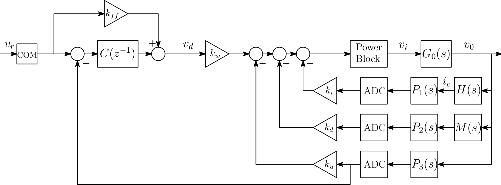

Voltage Control¶
The basic structure of the voltage loop is shown in Fig. 3. It is recommended that the user consult this document before continuing, as the discussion here will be an extension to that content. For a more detailed diagram of the FGC implementation strategy, click here.
{kind=link}
For the remaining portions of this documentation, the notation \(\mathcal{S}_{xy}\) will be used to represent the sensitivity function from a signal \(x\) to a signal \(y\). For all controller designs within the FGC, the desired closed-loop transfer function (technically the complementary sensitivity function) is selected as a (delayed) standard second-order system:
where \(r\) is the input reference, \(y\) is the output, \(\zeta \:\) is the desired damping factor, \(d_r\) is the desired reference delay and
where \(f_{d}\) [Hz] is the desired closed-loop bandwidth of the system.
From Fig. 3, it can be observed that there are two main loops to control; the damping loop \(\mathcal{S}_{v_d v_0}\) and the voltage loop \(\mathcal{S}_{v_r v_0}\). PyFresco implements an optimization strategy which first calculates the damping loop parameters \(\rho_d = \{k_i, k_d, k_u \}\) and then uses those parameters to formulate \(\mathcal{S}_{v_d v_0}\) (note that \(k_w = 1+k_u+D_mk_d\), where \(D_m\) is the dc-gain of the magnet \(M(s)\)). With \(\mathcal{S}_{v_d v_0}\), the voltage loop parameters \(\rho_v = \{k_{ff}, k_p, k_{int}\}\) (with \(C(z^{-1}) = k_p + k_{int}T_v(1-z^{-1})^{-1}\), and \(T_v\) [s] being the voltage loop sampling time) can then be efficiently calculated. This two-step process is performed to convexify the optimization constraints and avoid the problems that can occur with bi-linear terms. As with the RST synthesis, the user will have the option to minimize either the \(\mathcal{H}_\infty\) or \(\mathcal{H}_2\) criterion. Both of these methods will now be discussed for each loop.

Fig. 3 Interconnection of the power converter control system (voltage source).¶
Damping Loop Design¶
The (closed-loop) transfer function for the damping loop can be expressed as \(\mathcal{S}_{v_d v_0}(\rho_d) = Gk_w\psi_d^{-1}(\rho_d)\) where
and \(G = G_0e^{-s\tau_b}\) (where the ADC’s and sensors are approximated as pure delays \(\tau_i\) [s] and \(\tau_v\) [s]). The delay \(\tau_b\) [s] represents the delay approximation of the power block. Generally, for 6-pulse thyristor converters, this “delay” can be approximated to have a value of \(1.6667\)ms. For a 12-pulse converter, it would be half of this value. The value of \(\tau_b\) should be correctly set in the FGC property VS.FIRING.DELAY.
\(\mathcal{H}_\infty\) Control¶
In the \(\mathcal{H}_\infty\) sense, the objective is to minimize \(\|W_d(1 - \mathcal{S}_{v_dv_0}) \|_\infty\); an equivalent representation of this objective is to minimize \(\gamma\) such that \(\|W_d(1 - \mathcal{S}_{v_dv_0}) \|_\infty^2 < \gamma\) (which is the epigraph form of the minimization criterion). This criterion is satisfied if the following optimization problem is considered:
where \(W_d = (1-\mathcal{S}_{v_dv_0}^d)^{-1}\) (with \(\mathcal{S}_{v_dv_0}^d\) being the desired second-order response). The desired bandwidth, damping, and reference delay are taken into account with \(W_d\). The second constraint in the problem ensures that the damping loop gains are all greater than zero (which is a desired requirement asserted by TE-EPC to ensure that proper debugging can take place; each individual loop within the damping loop can be tested without any phase inversion). As was discussed in the RST synthesis, the above problem is convexified as follows:
where \(\rho_{d,0}\) is the initial stabilizing controller. The second constraint in this problem ensures that the damping loop possesses a minimum modulus margin \(\Delta M_d\). For the damping loop, PyFresco sets \(\rho_{d,0}\) to small positive constants; this is sufficient to ensure the stability of the damping loop. The same iterative procedure (as detailed in RST synthesis) is then performed to obtain the optimal solution.
\(\mathcal{H}_2\) Control¶
A similar linearization process can be used to obtain \(\mathcal{H}_2\) performance for the damping and voltage loops. An optimization problem can be formulated for minimizing the square of the \(\mathcal{H}_2\) model-reference damping loop objective (i.e., minimizing \(\|W_{d_2}(\mathcal{S}_{v_dv_0}(\rho_d) - \mathcal{S}_{v_dv_0}^d) \|_2^2\)); the optimization problem for this criteria can be expressed as follows:
where \(\Gamma(\omega) \in \mathbb{R}_+\) is an unknown function of \(\omega\) and \(W_{d_2} = 2 \pi \cdot\) damp_bw \(\cdot s^{-1}\). As with the RST synthesis, this \(\mathcal{H}_2\) optimization problem can be convexified and efficiently solved as follows:
where \(\psi_{d,0} = \psi_d(\rho_{d,0})\). As with the \(\mathcal{H}_\infty\) method, PyFresco sets the initial stabilizing controller \(\rho_{d,0}\) to small positive constants in order to guarantee the stability of the final controller. To better approximate the integral function, a trapezoidal approximation of the objective function is used, i.e., \(\gamma \approx \sum_{k=1}^{\eta} \left(\frac{\Gamma_{k} + \Gamma_{k+1}}{2}\right)(\omega_{k+1} - \omega_{k})\).
Voltage Loop Design¶
Once PyFresco has obtained the optimal parameters for the damping loop \(\rho_d^*\), the voltage loop synthesis can then commence. The (closed-loop) transfer function for the voltage loop can be expressed as \(\mathcal{S}_{v_r v_0}(\rho_v) = \mathcal{S}_{v_dv_0}(\rho_d^*)[k_{ff} + C(\rho_v)]\psi_v^{-1}(\rho_v)\) where \(\psi_v(\rho_v) = 1+\mathcal{S}_{v_dv_0}(\rho_d^*)C(\rho_v)e^{-s\tau_v}\). The next step is to then perform the necessary optimization to obtain the optimal voltage loop parameters \(\rho_v^*\).
\(\mathcal{H}_\infty\) Control¶
With the optimal parameters \(\rho_d*\) obtained from the damping loop optimization above, the objective is to now minimize \(\|W_v(1 - \mathcal{S}_{v_rv_0}) \|_\infty\) where \(W_v = (1-\mathcal{S}_{v_rv_0}^d)^{-1}\) (with \(\mathcal{S}_{v_rv_0}^d\) being the desired second-order response). The desired bandwidth, damping, and reference delay are taken into account with \(W_v\). As with the damping loop, the voltage loop optimization problem can then be convexified as follows:
where \(\rho_{v,0}\) is the initial stabilizing controller and
The second constraint in this problem ensures that the voltage loop possesses a minimum modulus margin \(\Delta M_v\). Unlike the damping loop optimization, selecting this initial controller is not as trivial as setting small constant values for the controller parameters. Therefore, the methods in here are first used to design the initial stabilizing controller. In this method, the PI controller is represented as \(C = XY^{-1}\), where \(X\) and \(Y\) are proper, stable transfer functions. Thus for a PI controller represented as \(C(s) = k_{p_1} + k_{p_2}/s\), these transfer functions can be formulated as
where \(a>0\) is a free parameter 1. The optimal choice of \(a\) is an open research topic; however, the methods here can be used to solve the \(\mathcal{H}_\infty\) problem for several values of \(a\). The value of \(a\) which yields the best optimal solution (i.e., the lowest value of \(\|W_v (1-\mathcal{S}_{v_r v_0}) \|_\infty\)) is then selected as the initial stabilizing controller to be used in (6). The values of \(a\) can be chosen around the closed-loop bandwidth of the voltage loop; in the PyFresco algorithm,
where \(\omega_{0}=2\pi\cdot\)volt_bw. Note that in obtaining the initial stabilizing controller, \(k_{ff}=0\) is assumed; however, when generating the final controller, \(k_{ff}\) is optimized. Also note that the methods here ensure very good performance for large order controllers; however, since the voltage-loop uses a simple PI controller, the performance may not be optimal. This is why the linearization methods are then used to optimize the performance for low-order controllers.
\(\mathcal{H}_2\) Control¶
For the voltage loop, the \(\mathcal{H}_2\) model-reference objective (i.e., minimizing \(\|W_{v_2}(\mathcal{S}_{v_rv_0} - \mathcal{S}_{v_rv_0}^d) \|_2^2\)) can be constructed as follows:
where \(W_{v_2} = 2 \pi \cdot\) volt_bw \(\cdot s^{-1}\). As with the RST synthesis (see Current/Field Control), this \(\mathcal{H}_2\) optimization problem can be convexified and efficiently solved as follows:
where \(\psi_{v,0} = \psi_v(\rho_{v,0})\) and
To set the initial stabilizing controller \(\rho_{v,0}\), the same iterative procedure discussed in the previous section is used. Once a feasible solution is found (for some given \(a\)), that solution is used as \(\psi_{v,0}\), and the problem in (7) can then be efficiently solved my PyFresco.
Performance Evaluation (Voltage Control)¶
Once PyFresco completes the design for both the damping and voltage loops (for either \(\mathcal{H}_\infty\) or \(\mathcal{H}_2\) performance), the question now remains, how can the performance of the controller be evaluated? The optimal solution for each optimization method can be used for this purpose; these optimal solutions are computed as follows:
\(\mathcal{H}_\infty\) control:
\[\begin{aligned} \gamma_\infty^* &= \sup_{\omega \in \Omega} |X_\infty (e^{-j\omega T_s})| \end{aligned}\]\(\mathcal{H}_2\) control:
\[\begin{aligned} \gamma_2^* &= \sqrt{\frac{T_s}{2\pi} \int_{- \pi/T_s}^{\pi/T_s} \left|X_2(e^{-j\omega T_s}) \right|^2 \: d\omega} \end{aligned}\]
where
\[\begin{split}\begin{aligned} \text{Damping Loop: }&X_\infty = W_d(1 - \mathcal{S}_{v_dv_0}(\rho_d^*)) \\ &X_2 = W_{d_2}(\mathcal{S}_{v_dv_0}(\rho_d^*) - \mathcal{S}_{v_dv_0}^d) \\ \text{Voltage Loop: }&X_\infty = W_v(1 - \mathcal{S}_{v_rv_0}(\rho_v^*)) \\ &X_2 = W_{v_2}(\mathcal{S}_{v_rv_0}(\rho_v^*) - \mathcal{S}_{v_rv_0}^d). \end{aligned}\end{split}\]
PyFresco displays these optimal solutions at the end of each optimization session. Note that the displayed optimal solution is an approximation to the true solution (since the frequency vector \(\omega\) is discrete and finite). See Performance Evaluation for evaluating the controller performance for each optimization method and for general details on using each of the optimization methods.
[lastpage]
- 1
Note that for the initial stabilizing controller, optimizing in the continuous-time domain is sufficient to guarantee the stability using the discrete-time controller